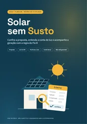
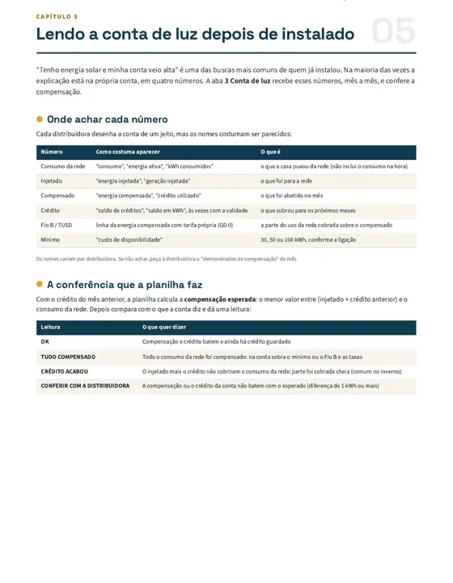
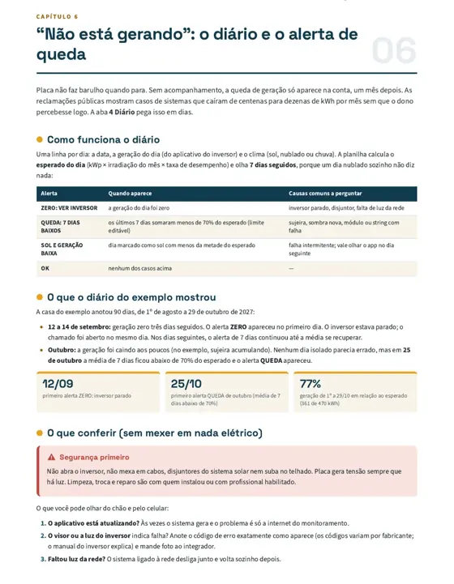
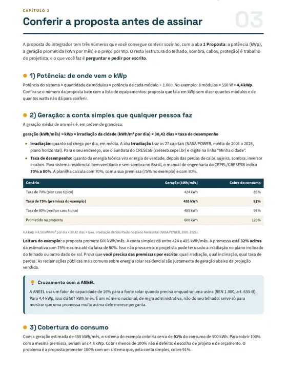

Solar sem Susto · guia + planilhaCom Critério
Conta alta mesmo com placa? Veja como ler cada linha
Conta de outubroexemplo do guia
- Consumo da rede
- 349kWh
- Injetado
- 351kWh
- Compensado
- 229kWh
- Crédito
- 2kWh
- Esperado pela regra
- 349kWh
Conferir com a distribuidora120 kWh a menos
Maio a julho: crédito acabou. No inverno a geração cai. Não é defeito.
Exemplo fictício do guia; a diferença de outubro foi colocada de propósito.
Pagamento na Kiwify, Pix ou cartão. 7 dias para pedir o dinheiro de volta.

Guia de 25 páginas, leitor da conta, diário de geração e como reclamar com protocolo.Segunda opinião do lado de quem paga a conta
O instalador e a distribuidora devem explicar a conta, e o guia mostra como pedir, com protocolo. O Solar sem Susto não vende placa e não indica instalador.
Onde está cada número na conta
São 4 números que já estão na conta: consumo, injetado, compensado e crédito. O guia mostra onde achar cada um e em que ordem conferir.
- Consumo da rede
- Aparece como "consumo", "energia ativa" ou "kWh consumidos". É o que a casa puxou da rede.
- Injetado
- Aparece como "energia injetada". É o que foi para a rede.
- Compensado
- Aparece como "energia compensada" ou "crédito utilizado". É o que foi abatido no mês.
- Crédito
- Aparece como "saldo de créditos" ou "saldo em kWh". É o que sobrou para os próximos meses. Vale por 60 meses.
O que as placas geraram não está na conta: fica no aplicativo do inversor.
Os nomes mudam de uma distribuidora para outra. Não achou? Peça à distribuidora o "demonstrativo de compensação" do mês.
Exemplo fictício do guia (casa em São Paulo, 500 kWh por mês). A diferença de outubro foi colocada de propósito, para mostrar o alerta. Reprodução dos valores do exemplo, não é captura de tela.


Conta alta: a ordem de conferir
- A geração do mês caiu?
- O consumo da casa subiu?
- O crédito acabou?
- A compensação bate?
- Mudou a tarifa ou a bandeira?
Às vezes não é defeito: no inverno a geração cai, o crédito pode acabar e a conta sobe.
Quando a compensação não bate, o guia diz a quem reclamar, e em que ordem.
O passo a passo de cada pergunta está no capítulo 5.
O que vem
- Guia em PDF de 25 páginas, com a fonte oficial no fim de cada capítulo.
- Leitor da conta. Você copia os números da conta, e a planilha compara o compensado com o esperado. Avisa quando não bate.
- Diário de geração. Uma linha por dia, com a geração do aplicativo do inversor. Avisa quando os últimos 7 dias somam menos de 70% do esperado (limite editável).
- A quem reclamar, e em que ordem. Instalador, distribuidora (com protocolo), ouvidoria e ANEEL (telefone 167). Com um modelo de frase para a reclamação.
- Planilha de exemplo. A casa fictícia, com 12 contas e 90 dias de diário.
O guia em PDF lê bem no celular. A planilha é mais confortável no computador ou no tablet.
Feito com apoio de inteligência artificial; regras e números conferidos nas fontes oficiais citadas no guia.
Nada de mexer em parte elétrica: o guia só pede o que dá para ver do chão e pelo celular.


Compra única, sem mensalidade.
Não substitui o engenheiro, o instalador nem a distribuidora, e não mexe no seu sistema. Não garante economia, geração nem retorno: os números são do exemplo, com premissas escritas.
Ler o aviso completocompra única · Guia de 25 páginas + planilha + exemplo
R$ 27 à vista no Pix, no boleto ou no cartão. Ou em até 3x no cartão, com acréscimo da Kiwify: 3x de R$ 9,64 (total R$ 28,92).
Pagamento na Kiwify, Pix ou cartão. 7 dias para pedir o dinheiro de volta.
Acesso na hora no Pix e no cartão, pela área de membros da Kiwify; no boleto, depois da compensação. O link chega no seu e-mail.
7 dias para pedir o dinheiro de volta
Leia o guia e confira uma conta. Se não servir, peça o reembolso em até 7 dias, sem explicar, pela Kiwify. É direito seu pelo Código de Defesa do Consumidor (art. 49).
Como pedir o reembolsoAinda vai comprar? O guia também confere a proposta.
No guia também: o preço por Wp comparado a uma referência de mercado, a conta de retorno com o Fio B de cada ano e 12 perguntas para fazer antes de assinar.
Propostaexemplo do guia
4,4 kWp (8 placas de 550 W), em São Paulo.
- Geração prometida
- 600kWh por mês
- Pela conta simples, com o sol da cidade
- 424 a 485kWh por mês
PROMESSA ACIMA DA FAIXA: PEÇA AS PREMISSAS
Não prova erro. Mostra que vale pedir as premissas por escrito.
Exemplo fictício do guia. Estimativa com premissas, não promessa de geração. Reprodução dos valores do exemplo, não é captura de tela.


Perguntas frequentes
A placa zera a conta de luz?
Não. Toda casa paga o mínimo da ligação: 30, 50 ou 100 kWh por mês, conforme o tipo de ligação. Quem pediu a ligação depois de 07/01/2023 também paga uma parte do Fio B (o uso da rede) sobre o que compensa: 60% em 2026, 75% em 2027 e 90% em 2028 (Lei 14.300, art. 27). De 2029 em diante, a regra da ANEEL ainda não saiu. O guia mostra como conferir se a compensação está certa.
Dá para usar no celular?
O guia em PDF lê bem no celular. A planilha abre no Google Planilhas, no Excel e no LibreOffice, sem macro, mas é mais confortável no computador ou no tablet.
Substitui o instalador?
Não. O material explica as regras gerais e organiza os seus números. Aviso completo: Não é projeto nem serviço técnico. Não substitui o engenheiro, o instalador nem a distribuidora. Projeto e instalação exigem profissional habilitado, com ART, e seguem as regras da sua distribuidora. Não mexe no seu sistema nem na sua conta. A planilha calcula com o que você digita; não lê o inversor nem a distribuidora. Não garante economia, geração, retorno nem resultado. Não é recomendação de investimento nem de financiamento. Não tem vínculo com a ANEEL, com distribuidoras, fabricantes, instaladores ou bancos. Regras conferidas nas fontes oficiais em 27/10/2026. O que está em tramitação está marcado no guia e fica fora das contas.
E a MP 1.304? A regra mudou de novo?
Não para o Fio B. A MP 1.304 virou a Lei 15.269/2025 e não mudou os percentuais do art. 27 da Lei 14.300 (conferido em 28/10/2026). O PL 1.438/2026 está em tramitação na Câmara e não vale enquanto não virar lei. No guia, ele fica marcado e fora das contas. Na planilha, o Fio B, a tarifa e o percentual de 2029 em diante ficam em células que você pode mudar.
Garante economia?
Não. O guia não promete economia, geração nem retorno. Os números são do exemplo, com as premissas escritas, e servem para mostrar a conta.